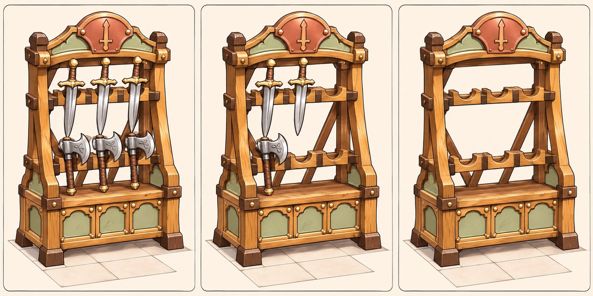

<!doctype html><html lang="zh-Hant"><meta charset="utf-8"><title>武器架實際模型審閱</title><style>body{margin:0;background:#f7f1e6;color:#463323;font:16px sans-serif}main{width:960px;margin:auto}h1{font-size:22px}img{width:960px;display:block}canvas{display:block;width:960px;height:640px}.labels{display:flex;justify-content:space-around;padding:8px}p{font-size:14px}</style><main><h1>武器架代表模型：設計參考與實際低模</h1><div class="labels"><span>實際模型：充足</span><span>銷售過半</span><span>完售</span></div><canvas id="v" width="960" height="640"></canvas><div class="labels"><span>正面</span><span>側面</span><span>背面</span><span>接合近看</span></div><p id="report">載入中</p></main><script src="../../幻靈奇旅/vendor/three.min.js"></script><script src="../../幻靈奇旅/vendor/GLTFLoader.js"></script><script type="module">
import{artisanArmory}from'../js/armory-pilot-v41.js?v=20261114-v41';import{addIllustratedOutline}from'../js/illustrated-outline.js?v=20261114-v41';import{createAssets}from'../js/asset-resolver.js?v=20261114-v41';import{loadProduct,buildProducts,setProductCount}from'../js/shelf-products.js?v=20261114-v41';import{shelfTypes}from'../js/furniture.js?v=20261114-v41';
const T=THREE,r=new T.WebGLRenderer({canvas:document.querySelector('canvas'),antialias:true,preserveDrawingBuffer:true});r.setSize(960,640);r.setPixelRatio(1);r.outputEncoding=T.sRGBEncoding;r.setClearColor(0xf7f1e6);r.setScissorTest(true);const assets=createAssets(T,{assets:[]}),source=artisanArmory(T),gltf=await new Promise((resolve,reject)=>new T.GLTFLoader().load('../../幻靈奇旅/models/tower/kid-sword.glb',resolve,undefined,reject)),views=[[.7,.4,3,36],[.7,.4,3,12],[.7,.4,3,0],[0,.15,3,0],[3,.15,0,0],[0,.15,-3,0],[.4,.1,2,0]];
for(let i=0;i<views.length;i++){const [x,y,z,count]=views[i],s=new T.Scene();s.add(new T.HemisphereLight(0xfff4df,0x858174,1.3));const sun=new T.DirectionalLight(0xffffff,1.4);sun.position.set(-3,6,4);s.add(sun);const root=assets.clone(source.scene);s.add(root);addIllustratedOutline(T,root,{color:0x16120e,thickness:.004});if(i<3){const products=buildProducts(T,assets,gltf,36,shelfTypes.find(t=>t.id==='armory'));setProductCount(products,count);root.add(products);}
const w=i<3?320:240,h=320,vx=i<3?i*320:(i-3)*240,vy=i<3?320:0,span=i===6?.68:1.02,cam=new T.OrthographicCamera(-span*w/h,span*w/h,span,-span,.01,30);cam.position.set(x,1+y,z);cam.lookAt(i===6?.24:0,i===6?1.2:.83,0);r.setViewport(vx,vy,w,h);r.setScissor(vx,vy,w,h);r.render(s,cam);}
document.querySelector('#report').textContent=`實際幾何 ${source.scene.userData.triangles} 三角形／每座貨架 1×1 格／細黑輪廓 0.004m。此為待確認的代表模型，尚未批次重製其他級別。`;window.reviewReady=true;
</script></html>